Full-body sitting pets for the Tamagotchi room, in four views, five moods and eight coats. They plug into the PNG slot Minsik left in the pet room, so no code change is needed to try them.
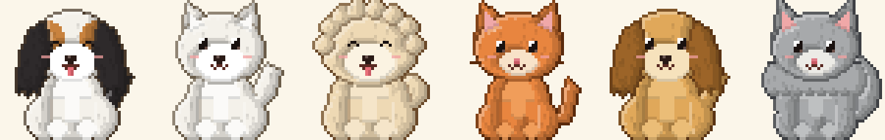
Today vs v2
In the app today (#261)
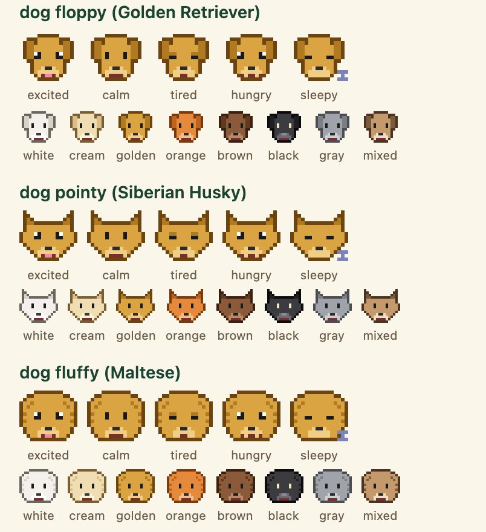
16 × 16 heads drawn in code.v2
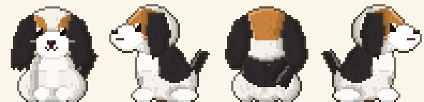
48 × 48, full body, shaded, four views (tricolour coat).
Style rules
48 × 48 canvas, sitting, head about half the height (chibi proportions, like the references).
Light from the top left: a darker band on the lower right edge, a light rim on the upper left.
Warm dark outline per coat (not black), lighter where the light hits.
Glossy eyes: 3 × 4 with a white highlight; black coats get a lighter ring so the eyes read.
Moods change the eyes and mouth, plus a small cue: Zz (sleepy), dots (hungry), a sweat drop (tired).
One generator draws all of them (design/pixel-pets-v2/gen.py), so a change to the rules updates every look.
All shapes
Floppy ears
Retrievers, beagles, spaniels · dog_floppy
Front · left · back · right
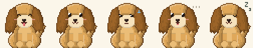
Excited · calm · tired · hungry · sleepy
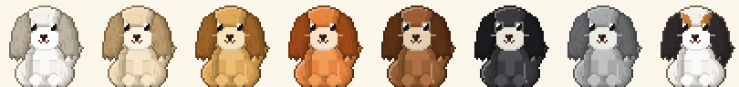
White · cream · golden · orange · brown · black · gray · mixed
Pointy ears
Shibas, huskies, corgis, jindos · dog_pointy
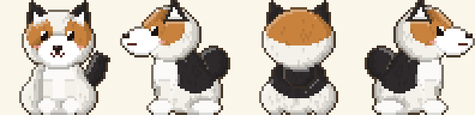
Front · left · back · right
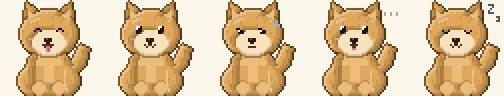
Excited · calm · tired · hungry · sleepy
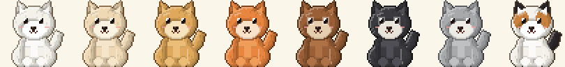
White · cream · golden · orange · brown · black · gray · mixed
Fluffy
Maltese, poodles, shih tzus · dog_fluffy
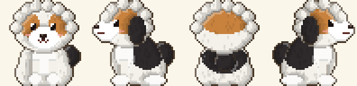
Front · left · back · right
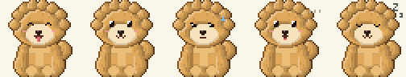
Excited · calm · tired · hungry · sleepy
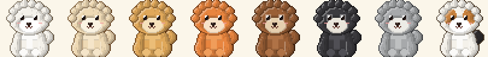
White · cream · golden · orange · brown · black · gray · mixed
Flat face
Pugs, bulldogs, boxers · dog_flat
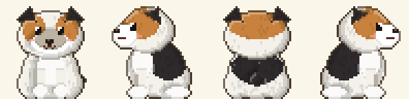
Front · left · back · right
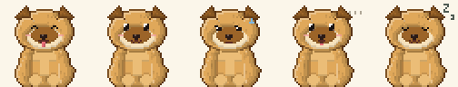
Excited · calm · tired · hungry · sleepy
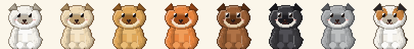
White · cream · golden · orange · brown · black · gray · mixed
Short hair
Most cats · cat_short
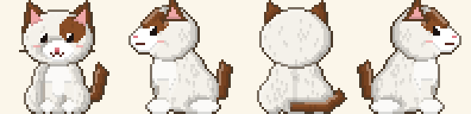
Front · left · back · right
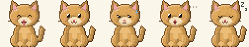
Excited · calm · tired · hungry · sleepy
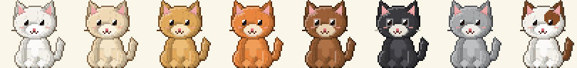
White · cream · golden · orange · brown · black · gray · mixed
Long hair
Maine coons, ragdolls, persians · cat_long
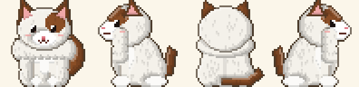
Front · left · back · right
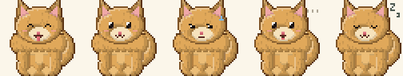
Excited · calm · tired · hungry · sleepy
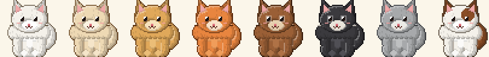
White · cream · golden · orange · brown · black · gray · mixed
Still to do
Round 4 (Oct 22): fur flecks, feathered floppy ears, a back-view spine shade, and "mixed" drawn as a tricolour (black saddle and ears, tan cheeks, white blaze) like the cavalier in the reference.
Next: breed markings beyond mixed (schnauzer brows and beard, husky mask, tuxedo bib), a softer body silhouette, and a 3/4 angle option like the reference group shot.
Size in the app: the pet room draws 16 × pixel. A 48 px sprite only stays crisp at multiples of 48, so ask Minsik to size PNGs at 48 × 3 = 144 px (or 96 / 192).
Animation: a 2-frame idle (breathing or tail wag) per look.
The references were used for style only. One of them is from a game, so nothing is traced or copied.